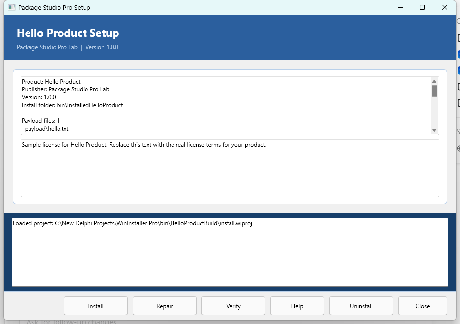

Run the Exported Installer
After export, open the build output folder and run the generated setup executable, for example MorseTrainerSetup.exe.

Picture 3
Runtime setup wizard generated by Package Studio Pro.
Review the product, publisher, version, install folder, payload count, shortcuts, and license text.
Click Install to install the application.
Use Verify to confirm installed files have not changed.
Use Repair to restore missing or changed files.
Use Uninstall to remove files and owned per-user integration entries.